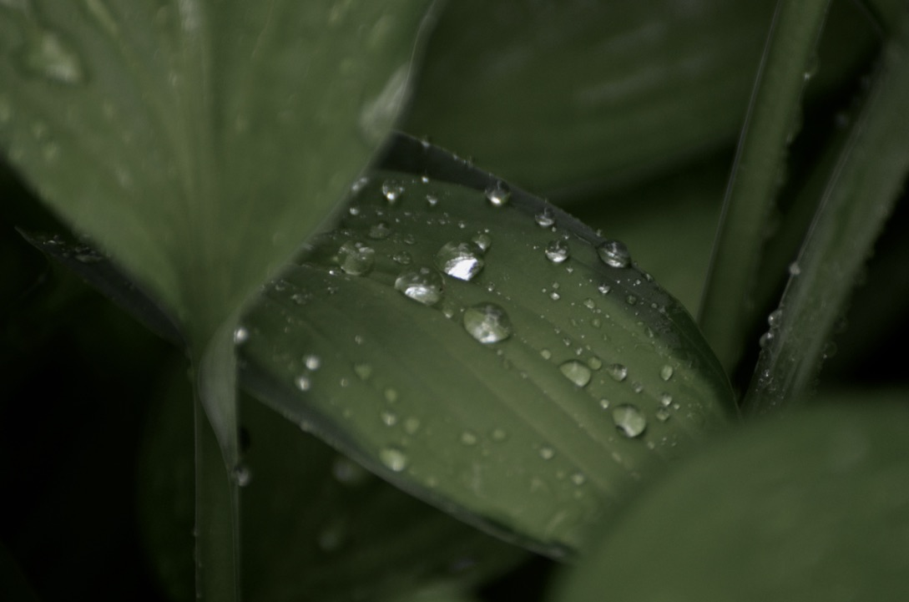
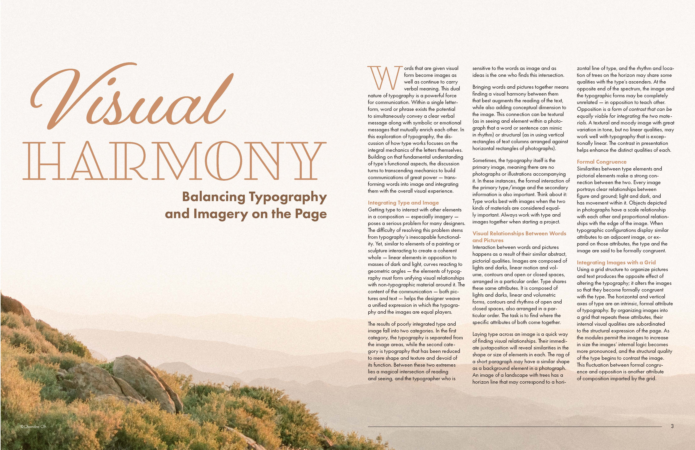
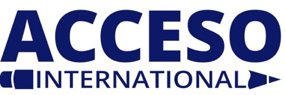
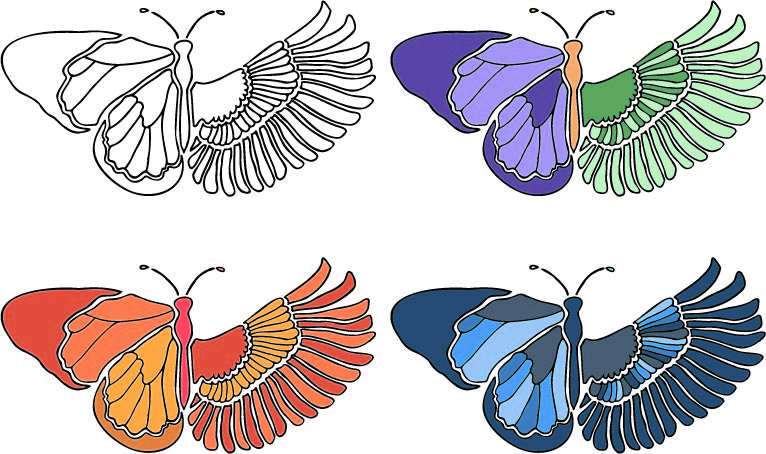
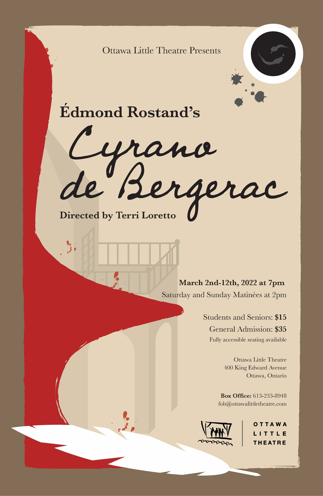
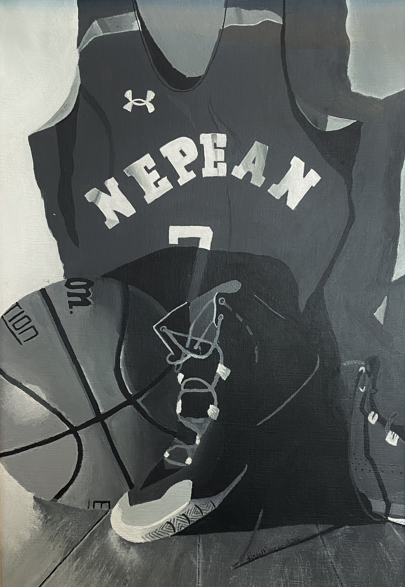
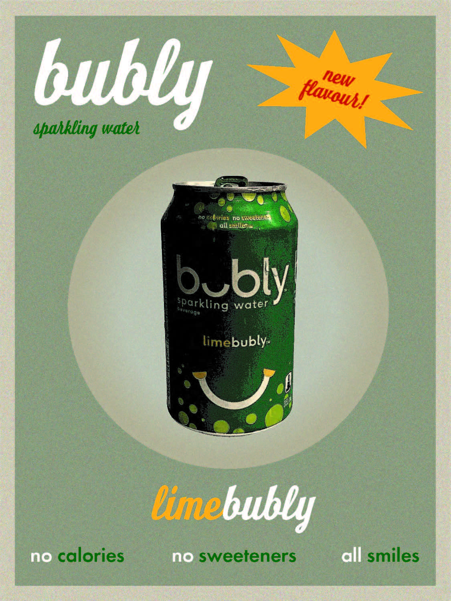

About Me
My name is Rachel Norman. I am a second year graphic design student at Algonquin College. I enjoy many types of digital art as well as fine art. Some include; photography, videography, drawing, and painting. Everything displayed on this page is my own work. Specifically, the My Work section shows some old portfolio pieces and pieces that I completed in my first year in the graphic design program.
My Work





